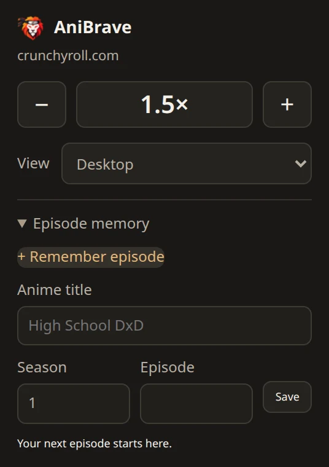

Extension for Brave
AniBrave
Desktop
Set a speed for each site, switch its layout, and keep your place between episodes.

Playback from the toolbar.
Keep your playback speed
Set a different speed for each site and keep it across videos and visits.
Continue an episode
Save an episode and timestamp locally. Resume on supported sites from the extension.
Choose a site view
Switch between Desktop, Mobile and Mobile identity from the toolbar.
Your sites on a new tab
Search with Brave’s default engine and open bookmarks and top sites with artwork from the banner store.
Install in Brave.
Download the repository as a ZIP and unzip it somewhere you'll keep.
Open
brave://extensions, turn on Developer mode and choose Load unpacked.Pick the
extensions/anibravefolder, pin AniBrave and reload your tabs.